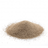

Ingredient pour 8 personnes.

500g de farine tout usage

10g de sel

3g de levure instantanée

260g d’eau tiède
Preparation: 15 min.
Étape 1
La veille, mélanger la farine avec le sel, la levure dans un bol. Verser l’eau tiède et remuer à l’aide d’une cuillère en bois. Couvrir d’un linge humide et laisser reposer de 8 à 12 heures à température ambiante.
Étape 2
Le lendemain, faire dégonfler la pâte qui aura doublé de volume en y enfonçant le poing. Saupoudrer la surface de travail de farine, puis y déposer la pâte. Rabattre les côtés de la pâte vers le centre de quatre à cinq fois, de façon à former une boule lisse.
Étape 3
Tapisser un grand bol d’une feuille de papier parchemin, puis y déposer la boule de pâte enfarinée. Couvrir d’un linge humide et laisser reposer de 45 minutes à 1 heure, jusqu’à ce que la pâte ait doublé de volume.
Étape 4
Préchauffer le four à 225 °C (440 °F).
Étape 5
Sur la grille du centre du four, déposer une cocotte en fonte émaillée d’une capacité de 3 litres (12 tasses) avec son couvercle. Chauffer 15 minutes.
Étape 6
Retirer le couvercle et déposer la boule de pâte avec le papier parchemin dans la cocotte. Couvrir et cuire au four 35 minutes.
Étape 7
Retirer du four et déposer le pain sur une grille. Laisser tiédir.